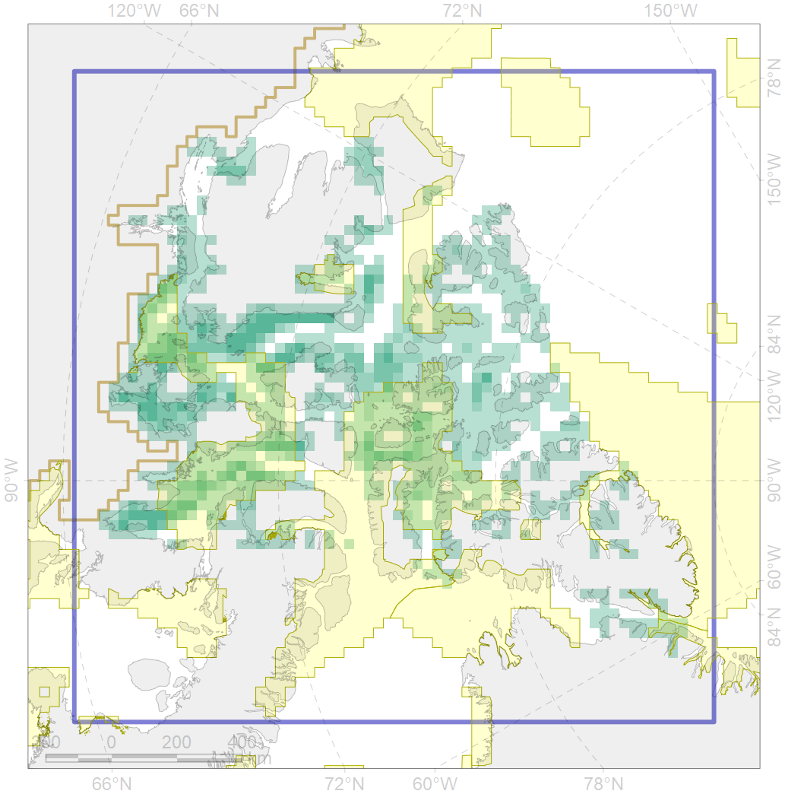
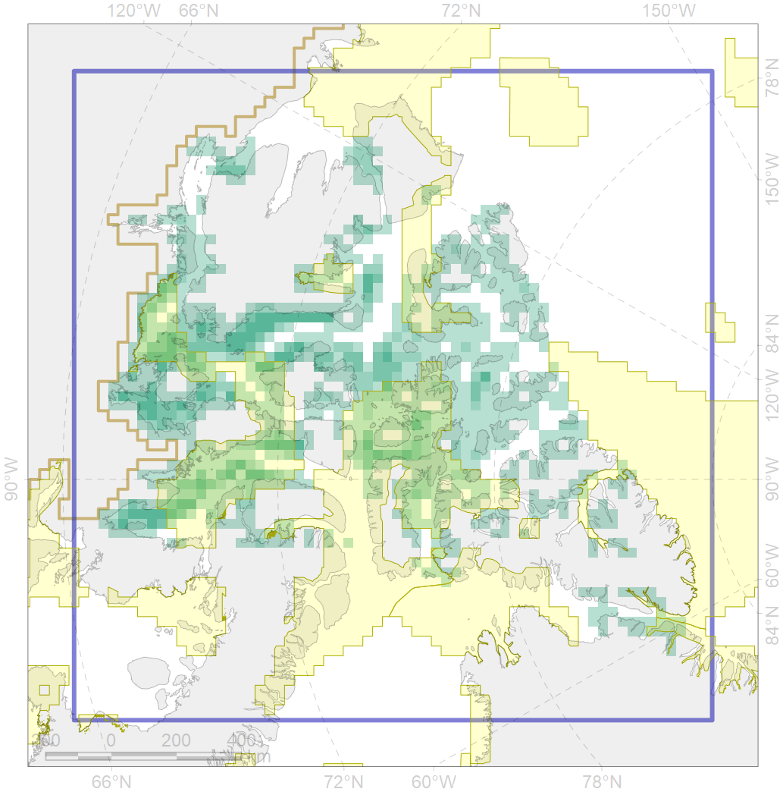

7136
 

| CF code | 7136 |
| CF name | III.1.1.3. Archipelago inner shelf of low and medium profile |
| Time Period | At least last 100 years |
| Source(s) | Harris et al., 2014; Carmack, Wassmann, 2006 |
| Seasonality | 1-12 |
| Depth Horizon | Sea floor |
| Methodology | Data obtained from the literature |
| Use Restrictions | Open access |
| Author Name | V. Spiridonov, W. Merritt |
| Notes | |
| Scenario’s Target | 0.06771574 |
| Target Achievement | 0.392 (Scenario: 579.0%) |
| PAC | Share of the Total Amount within the PAC | Share of the Target Achievement for the ArcNet | PAC’s Contribution to the Target Achievement |
|---|---|---|---|
| 33 | 0.3%0.4% | 4.0%6.3% | 0.7%1.1% |
| 51 | 0.0%0.2% | 0.3%2.3% | 0.0%0.4% |
| 52 | 13.0%13.1% | 183.9%185.6% | 31.8%32.0% |
| 53 | 0.0%0.0% | 0.1%0.1% | 0.0%0.0% |
| 54 | 0.1%0.3% | 1.5%4.5% | 0.3%0.8% |
| 63 | 0.7%0.8% | 9.3%10.4% | 1.6%1.8% |
| 64 | 0.6%0.7% | 4.7%5.3% | 0.8%0.9% |
| 65 | 23.2%24.1% | 294.6%307.7% | 50.9%53.1% |
| inner | 37.8%39.6% | 498.3%522.0% | 86.1%90.2% |
| outer | 62.2%67.7% | 80.7%150.1% | 13.9%25.9% |
| † supplement values are for area consistence whereas principal values are for Accenter compatible gridded stats |